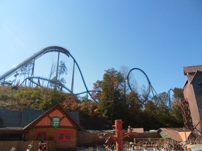
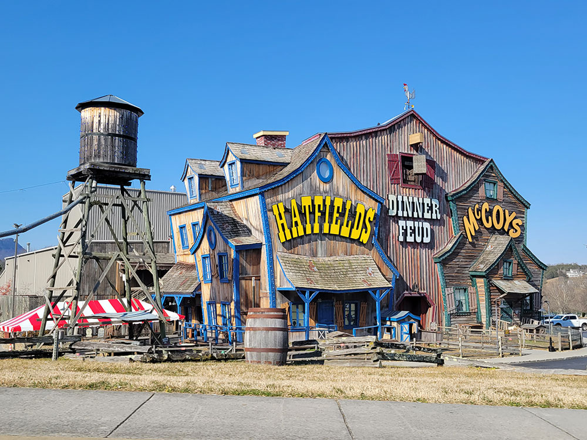
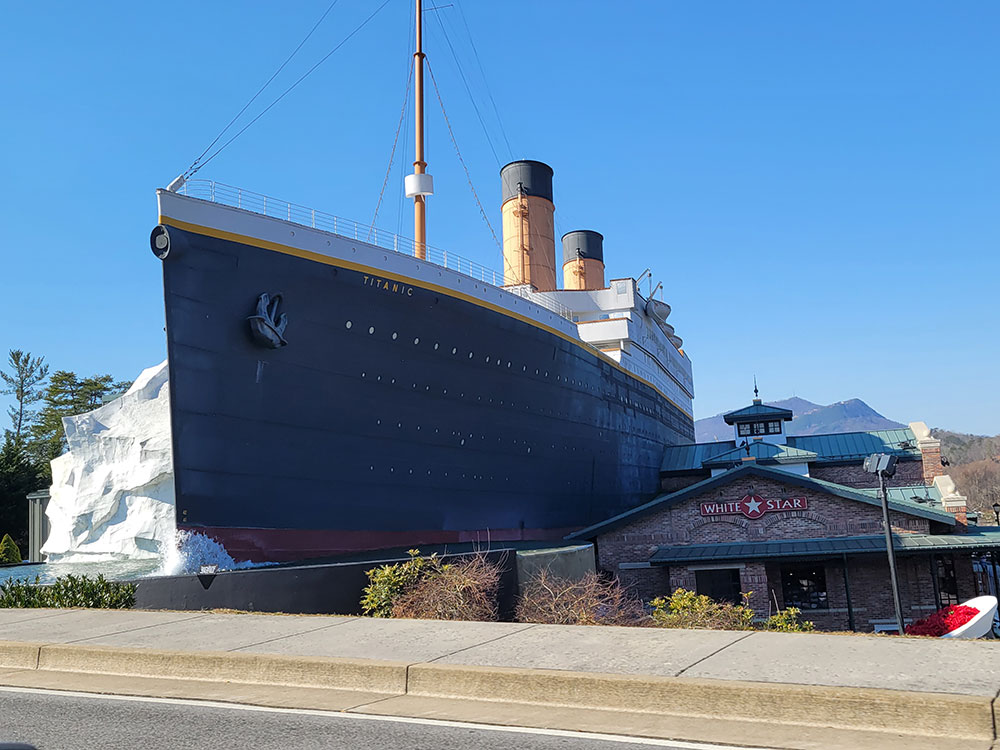
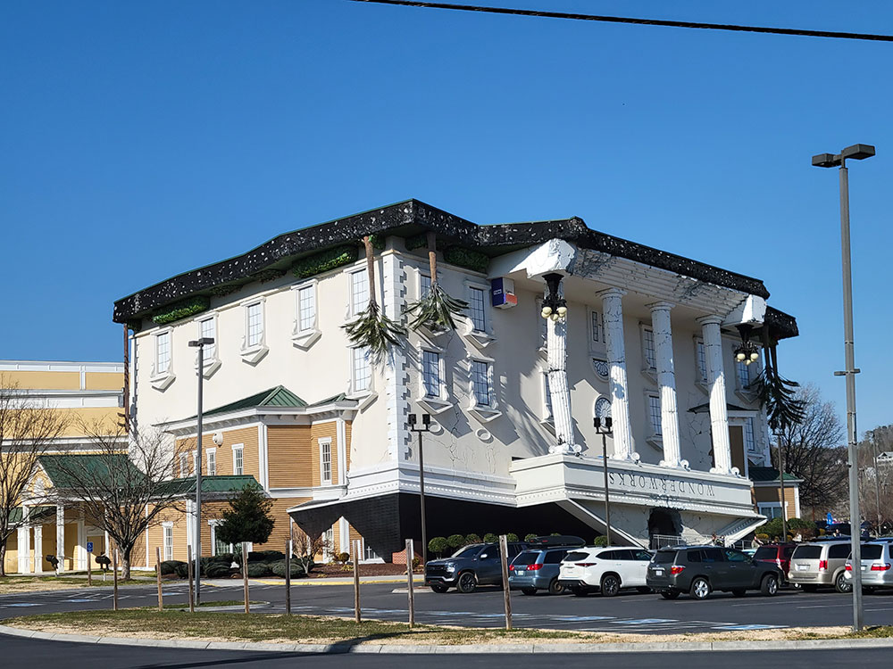
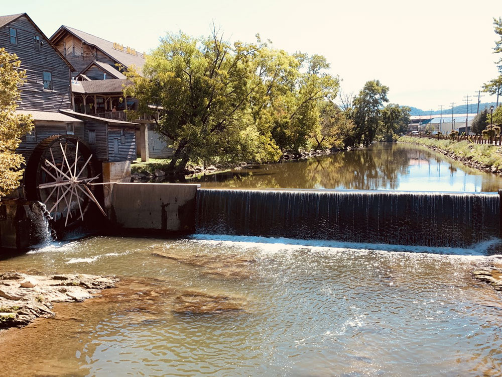

Situated 5 miles north of Great Smoky Mountains National Park, Pigeon Forge is a tourist destination that caters to Southern culture and country music fans
General Information
How to Get There
Overview
Pigeon Forge is a resort city in the Great Smoky Mountains of eastern Tennessee, about five miles north of Gatlinburg, and it is known as the home of Dollywood, the theme park owned by country music star Dolly Parton. Its main road, the Parkway, is lined with family attractions, dinner shows, outlet shopping, miniature golf, and go-karts, and the city is one of the most popular family destinations in the Southeast. It is also close to the Great Smoky Mountains National Park, the most visited in the United States.
Visitors come to Pigeon Forge for Dollywood and its rides, music, and crafts, for dinner shows such as Dolly Parton's Stampede, for mountain coasters, and for the Titanic Museum Attraction. They also come for outlet malls and unique attractions such as WonderWorks, for the holiday lights, and as a base for visiting the national park, and it is about 35 miles from Knoxville.
History
The city takes its name from the nearby Little Pigeon River and from the iron forge built by Isaac Love in the early 1800s, and the Old Mill, built in 1830, still stands on the river. Pigeon Forge remained a small farming community until the national park opened in the 1930s, and in the 1960s and 1970s it began to develop tourist attractions. Dolly Parton, who grew up in nearby Sevierville, partnered with a local theme park in 1986 to create Dollywood, and the city has since grown into a major tourist destination with tens of thousands of hotel rooms and cabins. The city was incorporated in 1961.
Sightseeing and Popular Landmarks
Dollywood is a theme park with roller coasters, crafts demonstrations, mountain music, and festivals, and the Dollywood Splash Country waterpark is next door. The Old Mill and Old Mill Square have shops, restaurants, and a working gristmill, and the Titanic Museum Attraction is a half-scale replica of the ship's bow with exhibits and artifacts. The Pigeon Forge Parkway has outlet shopping, mini golf, go-karts, and mountain coasters, and the Hatfield & McCoy Dinner Feud and Dolly Parton's Stampede are popular dinner shows.
Culture and Museums
The Titanic Museum Attraction has a collection of artifacts from the ship, and the Smoky Mountain Opry offers music shows. Dollywood showcases Appalachian crafts, such as glassblowing and woodworking, and the Pigeon Forge Winterfest and the Smoky Mountain Christmas bring millions of lights. The Parkway also has the Pigeon Forge Rod Run, a classic car show held twice a year.
Parks
The Little Pigeon River runs through the city, and Patriot Park offers walking trails and green space. The Great Smoky Mountains National Park, with hiking, waterfalls, and wildlife, is just south of the city, and Wears Valley and Cades Cove are scenic drives. The Pigeon Forge Parkway has views of the mountains, and the Wilderness at the Smokies is a large resort with a water park nearby.
Seasons and Weather
Pigeon Forge has a humid subtropical climate. Summers are warm and humid, with highs in the 80s°F, and winters are cool, with highs in the 40s°F and about 8 inches of snow. Summer and fall are the busiest seasons, with fall color in October, and the holiday season brings lights and special events. Traffic on the Parkway can be heavy, so visitors should plan accordingly.
Things to Do
Visit Dollywood
Dollywood is Pigeon Forge's signature attraction, featuring world-class roller coasters, live entertainment, traditional crafts, seasonal festivals, family rides, and Appalachian culture.
Explore The Island in Pigeon Forge
One of the city's most popular entertainment districts, The Island features restaurants, specialty shops, rides, attractions, dancing fountains, and the Great Smoky Mountain Wheel.
Visit the TITANIC Museum Attraction
Step inside a half-scale replica of the RMS Titanic and explore interactive exhibits, authentic artifacts, and passenger stories connected to the historic voyage.
Experience Great Smoky Mountains National Park
Located at the gateway to the Smokies, Pigeon Forge provides easy access to scenic drives, waterfalls, mountain overlooks, wildlife viewing areas, and outdoor adventures within the national park.
Ride a Mountain Coaster
Pigeon Forge is home to several mountain coasters that allow riders to control their speed while descending winding tracks through forested mountain terrain.
Discover WonderWorks
Recognizable by its upside-down building, WonderWorks offers interactive science exhibits, ropes courses, laser tag, simulators, and hands-on educational experiences.
Enjoy a Dinner Show
The city is famous for dinner theaters featuring music, comedy, acrobatics, horses, and family-friendly performances paired with meals.
Explore the Historic Old Mill District
One of Pigeon Forge's most iconic destinations, The Old Mill area features a historic gristmill, local shops, restaurants, and riverside scenery that reflect the town's heritage.
Go Shopping
Visitors can enjoy outlet malls, craft stores, specialty retailers, souvenir shops, and locally owned businesses throughout the city.
Enjoy Family Attractions
Pigeon Forge offers numerous family-friendly attractions including miniature golf courses, go-kart tracks, adventure parks, arcades, and interactive museums.
Pigeon Forge Mill: Listed on the National Register of Historic Places in 1975, this working gristmill, also known as Old Mill, is on the West Fork of the Little Pigeon River (along its east bank), and is accessible via Old Mill Drive (which intersects the Parkway at Light #7). The site includes a millhouse, milldam, and breastshot wheel.
The West Fork of the Little Pigeon River flows north from its source high on the slopes of Mount Collins through Sevier County before linking up with the Middle Fork in Sevierville. Pigeon Forge occupies a narrow valley along this river between Sevierville and Gatlinburg. High ridges surround Pigeon Forge on three sides, with Pine Mountain to the west, Shields Mountain to the east, and Cove Mountain to the south. A bend in the Little Pigeon provides the city's northern border with Sevierville, and a narrow gorge cut by the river between Cove Mountain and Shields Mountain acts as the city's boundary with Gatlinburg.
U.S. Route 441, known as "The Parkway", runs through the middle of Pigeon Forge en route to Gatlinburg and Great Smoky Mountains National Park, where it crests at Newfound Gap before descending to Cherokee, North Carolina. The six-lane strip along US-441 contains most of Pigeon Forge's tourist attractions. U.S. Route 321 (known as Wears Valley Road in Pigeon Forge) connects the town with Wears Valley and Townsend to the west. Teaster Lane runs along the eastern side of the city and serves as a local four-lane road bypassing some of the Parkway and is relatively undeveloped, except a few shopping centers. TN-449 serves as a bypass for both Sevierville and most of Pigeon Forge and directly connects with Dollywood.
- Paula Deen's Lumberjack Feud Show & Adventure Park
- Buttonwillow Civil War Theater
- TopJump Trampoline & Extreme Arena
- Crave Golf Club
- Titanic Museum
- Cooter's Place
- Alcatraz East Crime Museum Southern Gospel Museum and Hall of Fame
- Country Tonite Theatre
- Paula Deen's Lumberjack Feud
- Comedy Barn Theater
- WonderWorks Children's Museum
- Smoky Mountain Opry
- Elvis & Hollywood Legends Museum
- Hatfield and McCoy Dinner Feud
- The Tomb Escape Adventure
- Biblical Times Dinner Theater
- Red Skelton Tribute Theater
- Flyaway Indoor Skydiving
- NASCAR Speedpark
- Smoky Mountain Alpine Coaster
- Jurassic Jungle Boat Ride
- Hollywood Wax Museum Pigeon Forge
- The Island in Pigeon Forge (featuring the Great Smoky Mountain Wheel)
- Tribute to Frank Sinatra & The Rat Pack
- The Island Show Fountains American Oldies Theater
- Grand Majestic Dinner Theater
- Great Smoky Mountain Murder Mystery
- Ripken Experience
- Seasonal events such as Winterfest
Pigeon Forge has various entertainment opportunities for car and truck enthusiasts. The calendar of car and truck show events varies each year.
This article uses material from Wikipedia as well as information from official tourism and institutional sources. Key references include Pigeon Forge Tourism, Dollywood, Great Smoky Mountains National Park, Titanic Museum Attraction, Tennessee Tourism, and National Weather Service Morristown. Wikipedia material is from the articles "Pigeon Forge, Tennessee" and "Dollywood", and is available under the Creative Commons Attribution-Share-Alike License 3.0.
Featured Locations

Jllm06, CC BY-SA 4.0, via Wikimedia Commons; Image Size Adjusted
Dollywood
Theme park jointly owned by entertainer Dolly Parton and Herschend Family Entertainment is the biggest ticketed tourist attraction in Tennessee



